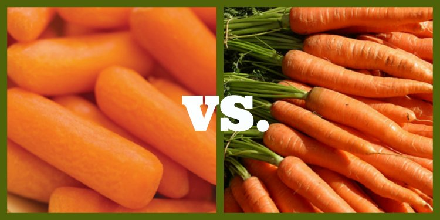
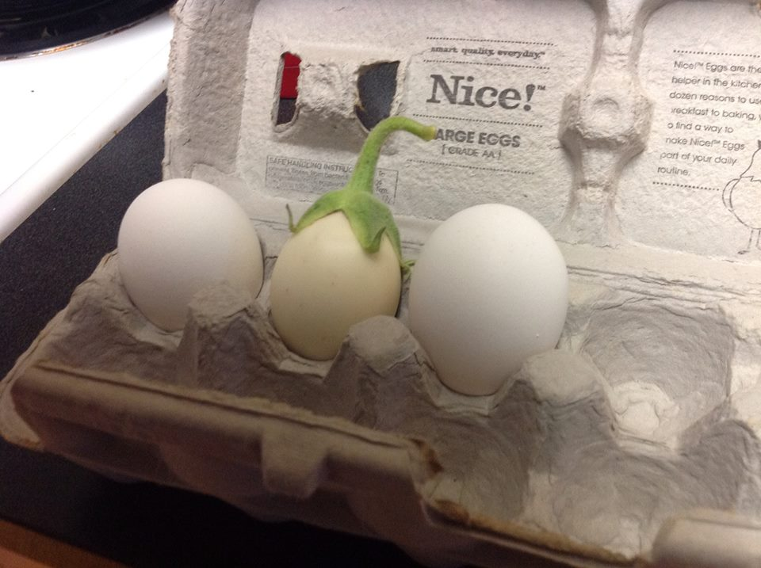
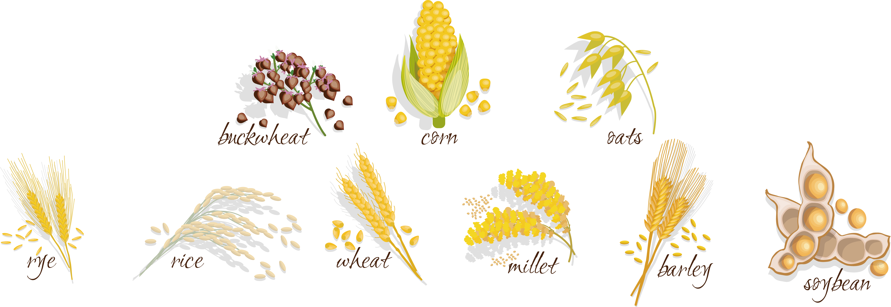
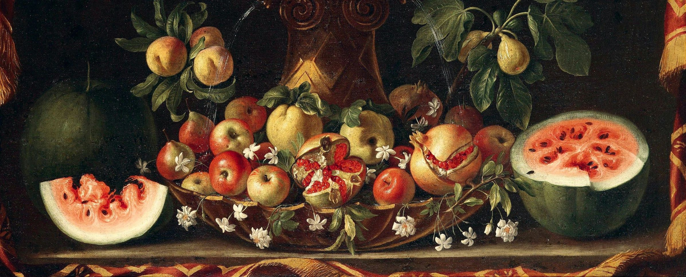

Fruits and vegetables used to look so different,
you might not even recognize them.
Carrots are orange,
bananas are yellow,
and eggplants are big and purple,
and that's how we always think about them.
Humans have been genetically manipulating fruits and vegetables for thousands of years through selective cultivation, always in search of a better taste, a more pleasing texture and a higher yield.
Wild Carrots, the Ancestor of All Cultivated Carrots
They're the flowering plants with thin, white roots
The wild carrots, also known as Daucus carota, bird's nest, bishop's lace, and Queen Anne's lace, is a white, flowering plant in the family Apiaceae. It is the earliest carrots, originally purple or white, with a thin, forked, root, like many other normal plants – but they lost their purple pigment and were cultivated to become a yellow color.
Know more about Wild CarrotsWanna find and eat a wild carrot?
Beware Poison Hemlock!
See the image on the left, that's a wild carrot, it closely resembles poisonous water hemlock, poison hemlock and fool's parsley, all of which can be deadly.
In Case You Didn't Already Know,
Baby Carrots Are A Big Fat Lie

A baby carrot is a carrot sold at a smaller size before reaching maturity. Despite its adorable name, Most baby carrots sold in U.S. supermarkets are really what the industry calls “baby cuts." These babies are actually whole, imperfect, craggy-looking carrots that are sliced into smaller pieces, sculpted into rounded sticks, washed and packaged for our snacking convenience.
The Unusual Journey of the Banana
Years ago, bananas have seeds that can be grown to make new fruits
Banana's father - Cavendish
The cheery yellow Cavendish banana in our grocery stores was named after William Cavendish. His gardeners were the first to grow the fruit in the extraordinary greenhouses at Chatsworth House in the 1830s. The banana was brought into large-scale cultivation soon after.
Seeds Disappeared in Bananas
Although fruits — including wild bananas — have seeds that can be grown to make new fruits, Cavendish bananas are cultivated from clones, or genetically identical plants grown asexually on the roots of a mother plant. This process results in the same predictably delicious fruit produced generation after generation.
Thick Skin and Protection
The Cavendish banana became popular worldwide in the 1950s because of its resistance to Panama Disease, which decimated the previous popular banana variety. With its thicker skin, the Cavendish was easier for growers to ship with less bruising than other varieties. Today the Cavendish variety represents 99 percent of commercially exported bananas.
Eggplant Really was the EGG Plant
white, azure, purple, yellow, and as small as an egg
The eggplant was named because of its original resemblance to a small, white egg when it was first encountered by English speakers. Since then, it has grown through selective breeding into a large, fleshy, purple mass. The shape and color changed as people bred eggplant into varieties with less bitter flesh and a larger nutritional yield packed into a single fruit.
Like an Egg, not a Plant.
Most people would probably guess eggplant is a vegetable. However, it’s actually the fruit of a plant of the same name. Eggplants are also closely related to tomatoes and potatoes. Eggplants grow wild, but they’re also grown as an annual crop in areas with a mild climate.

Maize, also known as Corn
would'nt exist if it weren't for the humans that cultivated and developed it
It is a human invention, a plant that does not exist naturally in the wild. Corn can only survive if planted and protected by humans. It was started from a wild grass called teosinte, which looked very different from our corn today. The kernels were small and were not placed close together like kernels on the husked ear of modern corn.
Today, corn is the most widely grown crop in the United States
About 90 percent of corn acres grown are genetically modified. The majority of U.S. corn yield goes to livestock feed while the rest makes its way to our plates on the cob or in even more subtle ways such as corn syrup and cornstarch.

Antique Watermelon was not red and fleshy
It has swirly shapes embedded in six triangular pie-shaped pieces
This 17th-century painting by Giovanni Stanchi depicts a watermelon that looks strikingly different from modern melons. A cross-section of the one in the painting, which was made between 1645 and 1672, appears to have swirly shapes embedded in six triangular pie-shaped pieces.